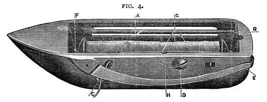

THE SLACK-THREAD PIN presses down the check-lever. It is adjusted properly for all classes of general sewing, AND SHOULD NEVER BE ALTERED unless the thread breaks in sewing very thick cloth; then loosen the screw and adjust the Slack-Thread Pin a very little lower. Should it become displaced re-adjust it according to the following rule - It should begin to press down the check-lever when the needle gauge mark is one-eighth of an inch above the top of the arm.
THE CHECK-SPRING draws up the check lever. Should it break or wear out after long usage, insert another as follows: - Let the needle-bar rest when the gauge mark is level with the top of the arm, take out the screw that holds the spring, draw the check-lever out half its length, holding it while you put in the spring with its hooked end downward, then move the check-lever back into its place. Replace the screw, turning it around a few times only, press down the end of the spring into the first hole (or into the second or third hole if using coarse thread), and tighten the screw.
THE PRESSER-SCREW regulates the pressure upon the fabric; turn it to the right to increase the pressure, and to the left to decrease it. Fabrics of thick or firm texture require more pressure than thin and soft fabrics.
THE LEATHER BAND must be tight enough to work the machine without slipping. If it is too loose, cut about half-an-inch from one end and re-fasten it as before.
IF THE NEEDLE-THREAD BREAKS when the needle is adjusted properly, it is caused either by the tension being too tight, the eye of the needle being too small, the slack-thread pin becoming displaced (see note above), a roughness on the shuttle or its carrier, and sometimes, when using coarse silk, by the point of the needle being bent, or the needle being rough.
IF THE SHUTTLE THREAD BREAKS, loosen the tension by unscrewing the small screw at the side of the shuttle.
IF THERE ARE MISSED STITCHES, they are caused by the needle being adjusted too high or too low, by it being bent away from the shuttle, it being too small for the thread, or by the point of the shuttle having become blunted, or needle-eye too large for cotton.
IF THE NEEDLE-THREAD FORMS SMALL LOOPS on the top of the fabric, it is caused by the check-spring having been broken, (see note above "Check Spring",) and sometimes when sewing with coarse silk or linen thread, by the needle being too find, or its point being bent. In the latter case smooth the point of the needle on an oilstone.
IF THE STITCHES VARY IN LENGTH while hemming or sewing very thick and soft fabrics, loosen the feed-raising cam, and move it a little to the right to raise the feed-points, then tighten it firmly; do not raise the feed-points too high; when they drop down in working they should be a little below the surface of the needle plate.
SEAMS IN HARD COTTON FABRICS should be passed slowly, and if extra thick rub a little white soap on them, which will facilitate the passage of the needle.
THE EXTRA NEEDLE PLATE, which has a large hole, is only required when using a No.4 or 5 needle with 25 to 60 linen thread. Never use it for any other number.
See page 12 for sizes of needles and thread.
| 1 BRAIDER (Illustrated on page 11.) | 1 QUILTING GAUGE and SCREW |
| 1 DOUBLE HEMMER | 6 SHUTTLE BOBBINS |
| 1 TUCKING GUIDE | 12 NEEDLES, ASSORTED |
| 1 SCREW for TUCKING GUIDE | 1 SCREWDRIVER |
| 1 COARSE NEEDLE PLATE | 1 OIL CAN |
| 1 SPRING for CHECK LEVER | 1 BOTTLE OF OIL |
1 BOOK OF INSTRUCTIONS
The other Accessories are for special classes of work, and are supplied at a small extra charge.
Put the bobbin in the shuttle by inserting one end in (F) towards the shuttle point, pressing the other end down to its place (B), having the tread to draw from under the reel at the right side (A) when the shuttle point is from you; then across the shuttle, down the (H) slot in the spring, and finally through the large hole (C), which will bring it under the spring (E). The tension is regulated by turning the screw (D).

If the shuttle or any other small part of the machine gets out of order, it may be sent through the post to the works.